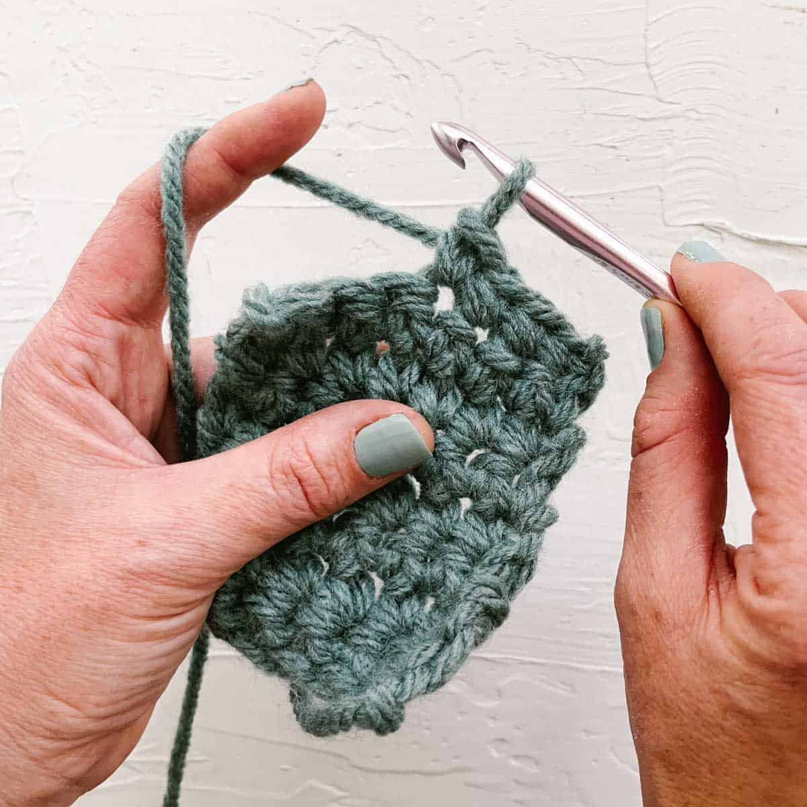

This page says a bit more about me.
When I am not studying, I like to read books, play video games, and crochet stuffed animals and blankets.
These are my favorite books:
I also love making things with crochet!.
I am not that good at making music, but I like to listen to music. This table lists some of my favorite songs:
| Song | Artist |
|---|---|
| Femininomenon | Chappell Roan |
| Labour | Paris Paloma |
| APT. | ROSE & Bruno Mars |
| See You Again | Tyler the Creator |